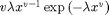
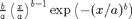
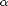
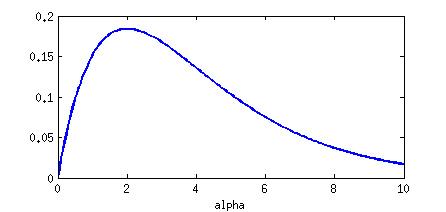
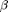
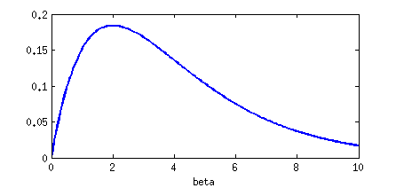

Fit a Weibull model using Trinity and JAGS
Contents
It is important to note that the Weibull distribution follows a different parameter convention in MATLAB and JAGS, and we will have to transform parameters in order to compare.
JAGS convention (scale and shape ):

MATLAB convention (scale a and shape b):

Preamble
Cleanup first
clear all
p = @sprintf;
Generate data and make structure
rng(0) P = 20; % persons C = 8; % conditions I = 50; % trials per person per condition cscale = [1 1 1 1 3 3 3 3]; % scale parameters cshape = [1 2 3 4 5 6 7 8]; % shape parameters allscale = repmat(ones(P, 1) * cscale + randn(P, C) / 10, [1, 1, I]); allshape = repmat(ones(P, 1) * cshape + randn(P, C) / 10, [1, 1, I]); condition = repmat(1:C, [P, 1, I]); % condition index person = repmat((1:P)', [1, C, I]); % person index; y = wblrnd(allscale, allshape); % MATLAB uses (scale, shape) % JAGS uses (v, l), v = shape, l = scale^-v data = struct('N', P * C * I, 'C', C, 'P', P, ... 'condition', condition(:), 'person', person(:), 'y', y(:));
Define some priors
Use JAGS parameter conventions
prscale = [2.0 0.5]; % gamma distribution (shape, rate) prshape = [2.0 0.5]; % gamma distribution (shape, rate)
Plot the priors
Make sure to transform to MATLAB parameter conventions
Scale 
figure('windowstyle', 'docked') xax = linspace( 0.0, 10.0, 200); plot(xax, gampdf(xax, prscale(1), prscale(2)^-1), 'linewidth', 2) xlabel alpha
Shape 
xax = linspace( 0.0, 10.0, 200); plot(xax, gampdf(xax, prshape(1), prshape(2)^-1), 'linewidth', 2) xlabel beta
Make all inputs that Trinity needs
Write the JAGS model into a variable (cell variable)
model = {
'model {'
' # Priors on precision'
' precshape ~ dgamma(0.1, 0.1)'
' precscale ~ dgamma(0.1, 0.1)'
''
' for (c in 1:C) { '
' # Priors on means'
p(' mushape[c] ~ dgamma(%g, %g)', prshape)
p(' muscale[c] ~ dgamma(%g, %g)', prscale)
''
' # Random effects'
' for (p in 1:P) { '
' shape[c,p] ~ dnorm(mushape[c], precshape)'
' scale[c,p] ~ dnorm(muscale[c], precscale)'
' }'
' }'
''
' # Likelihood'
' for (n in 1:N) {'
' y[n] ~ dweib(shape[condition[n],person[n]],'
' scale[condition[n],person[n]])'
' }'
'}'
};
List all the parameters of interest (cell variable)
parameters = { ...
'scale', 'shape', ...
'mushape', 'muscale', ...
'precshape', 'precscale'};
Write a function that generates a structure with one random value for each random parameter
generator = @()struct(... 'mushape', rand(1, C) + 0.1 , ... 'muscale', rand(1, C) + 0.1 );
Tell Trinity which engine to use
engine = 'jags';
Run Trinity with the CALLBAYES() function
tic % [stats, chains, diagnostics, info] = callbayes(engine, ... % 'model' , model , ... % 'data' , data , ... % 'nchains' , 4 , ... % 'verbosity' , 0 , ... % 'nsamples' , 1e3 , ... % 'nburnin' , 5e2 , ... % 'parallel' , isunix() , ... % 'workingdir' , 'wdir' , ... % 'monitorparams' , parameters , ... % 'init' , generator ); load /tmp/wbl fprintf('%s took %f seconds!\n', upper(engine), toc)
JAGS took 0.085086 seconds!
Inspect the results
First, inspect convergence
if any(codatable(chains, @gelmanrubin) > 1.1) grtable(chains, 1.1) warning('Some chains were not converged!') else disp('Convergence looks good.') end
Convergence looks good.
Now check some basic descriptive statistics averaged over all chains
disp('Descriptive statistics for all chains:')
Descriptive statistics for all chains:
Boundary separation
codatable(chains, '^mushape')
Estimand mean std plt0 mushape_1 0.9997 0.04408 0 mushape_2 1.998 0.06453 0 mushape_3 3.036 0.08023 0 mushape_4 3.824 0.1065 0 mushape_5 4.778 0.1186 0 mushape_6 5.498 0.1291 0 mushape_7 6.238 0.1527 0 mushape_8 7.376 0.1743 0
A-priori bias
codatable(chains, '^muscale')
Estimand mean std plt0 muscale_1 0.9543 0.03819 0 muscale_2 1.096 0.04368 0 muscale_3 0.9436 0.03628 0 muscale_4 0.9787 0.03772 0 muscale_5 0.0254 0.01394 0 muscale_6 0.02372 0.01261 0 muscale_7 0.02232 0.01234 0 muscale_8 0.0225 0.01275 0
Make some figures
Smoothed histograms figure('windowstyle', 'docked')